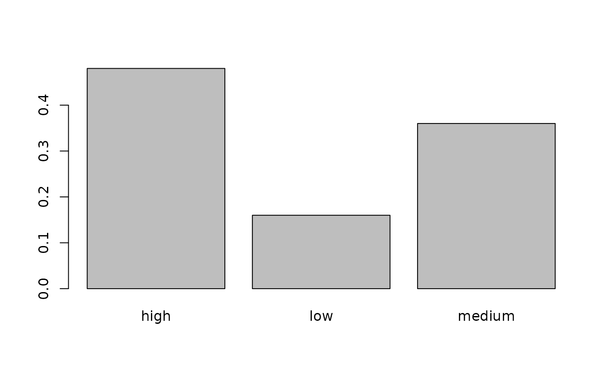
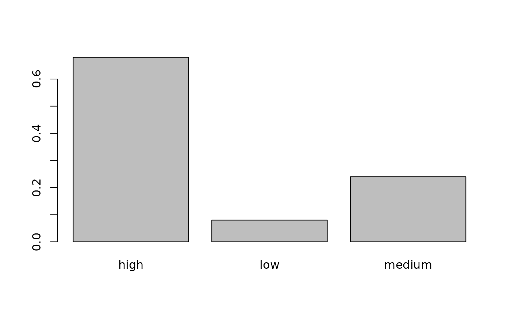

Setup
The tiltIndicator package comes with example datasets for the PCTR indicator.
library(dplyr, warn.conflicts = FALSE)
library(tiltIndicator)
ecoinvent_co2 <- glimpse(pctr_ecoinvent_co2)
#> Rows: 25
#> Columns: 9
#> $ activity_product_uuid <chr> "0a242b09-772a-5edf-8e82-9cb4ba52a258_ae39ee61-d…
#> $ ei_activity <chr> "transport, freight, lorry 7.5-16 metric ton, EU…
#> $ geo <chr> "RoW", "GLO", "RER", "GLO", "GLO", "RER", "RoW",…
#> $ sec <chr> "Transport", "Waste Treatment & Recycling", "Tra…
#> $ isic_class <chr> "4923:Freight transport by road", "3822:Treatmen…
#> $ ref_prod <chr> "transport, freight, lorry 7.5-16 metric ton, EU…
#> $ unit <chr> "metric ton*km", "kg", "metric ton*km", "kg", "m…
#> $ co2_footprint <dbl> 4.332158, 3.944488, 6.256538, 6.988420, 7.834485…
#> $ emissions_unit <chr> "per product unit", "per product unit", "per pro…
companies <- glimpse(pctr_companies)
#> Rows: 25
#> Columns: 6
#> $ company_id <chr> "powerstartmanufacturinggmbh_0000000546010082730…
#> $ company_name <chr> "powerstart_manufacturing_gmbh", "powerstart_man…
#> $ ep_product <chr> "mining_and_quarrying_machinery_and_equipment", …
#> $ activity_product_uuid <chr> "0a242b09-772a-5edf-8e82-9cb4ba52a258_ae39ee61-d…
#> $ ei_activity <chr> "transport, freight, lorry 7.5-16 metric ton, EU…
#> $ unit <chr> "metric ton*km", "kg", "metric ton*km", "kg", "m…Analysis
Introduction
The Product Carbon Transition Risk measures the transition risk on the product-level of a company. The indicator is expressed in the percentage of all products that are at high risk, medium risk or low risk due to the products’ relative carbon footprint. The assessment is first performed on a product-level and can then be aggregated to the company-level.
The Product Carbon Transition Risk measures the relative carbon footprint per product. As a default option each product will be compared to the carbon footprint of every other product. Alternatively, users can also choose to compare those products of the same type, so e.g., comparing only raw materials with each other. Products with a higher carbon-footprint will also face a higher risk.
After identifying each carbon footprint for one product, the products will be ranked according to their carbon footprint. Products in the highest percentile (≥70%) will be classified as high transition risk products. Products in the medium percentile (between ≥30% and <70%) will be classified as medium transition risk products. Products in the lowest percentile (<30%) will be classified as low transition risk products.
After categorisation, we will aggregate all products from the same category and set them in relation to all products that the company produces. We derive the Product Carbon Transition Risks.
Please note that carbon footprints, and emissions are used equivalently. Carbon footprint refers only on the emissions which occur at the production stage of the product and not the emissions from the inputs. The unit is CO2e in kg.
The goal of the transition risk MVP is to create a first draft of how the transition risk indicator for products would be build in code in order to convert it into code production easily in the future. This MVP should provide the share of products with “low”, “medium”, or “high” relative production emissions per company.
In this markdown file the aim is to prepare data so that they contain the following:
- a column with production emissions
- a column indicating the percentile relative to (i) all products with same unit (ii) products in same sector (iii) products in same segment
- a column indicating whether the product has “low”, “medium” or “high” relative production emissions
The product carbon transition risk indicator consists of 2 main steps:
- Score activities.
- Score companies.
Score activities
scored_activities <- ecoinvent_co2 |>
pctr_score_activities(low_threshold = 0.3, high_threshold = 0.7)Show distributions.
barplot(prop.table(table(scored_activities$score_all)))
barplot(prop.table(table(scored_activities$score_unit)))
barplot(prop.table(table(scored_activities$score_unit_sec)))
Score companies
The final dataset should have three rows per company, i.e. one for each risk_group (low, medium, high) and one column each indicating the share of products in the respective risk groups for the three different benchmarks (all products, products with same unit, products with same unit and sector).
scored_companies <- pctr_score_companies(scored_activities, companies)
#> `summarise()` has grouped output by 'company_id'. You can override using the
#> `.groups` argument.
#> `summarise()` has grouped output by 'company_id'. You can override using the
#> `.groups` argument.
#> `summarise()` has grouped output by 'company_id'. You can override using the
#> `.groups` argument.
scored_companies
#> # A tibble: 9 × 5
#> company_id score share_all share_unit share_unit_sec
#> <chr> <chr> <dbl> <dbl> <dbl>
#> 1 powerstartmanufacturinggmbh_0000000… high 0.25 0.5 0.5
#> 2 powerstartmanufacturinggmbh_0000000… medi… 0.25 0.25 0.25
#> 3 powerstartmanufacturinggmbh_0000000… low 0.5 0.25 0.25
#> 4 ebtor_00000005324899621837001 high 0.6 0.6 0.8
#> 5 ebtor_00000005324899621837001 medi… 0.2 0.4 0.2
#> 6 ebtor_00000005324899621837001 low 0.2 0 0
#> 7 mbdgmbh_00000004773428001 high 0.25 0.438 0.688
#> 8 mbdgmbh_00000004773428001 medi… 0.5 0.375 0.25
#> 9 mbdgmbh_00000004773428001 low 0.25 0.188 0.0625